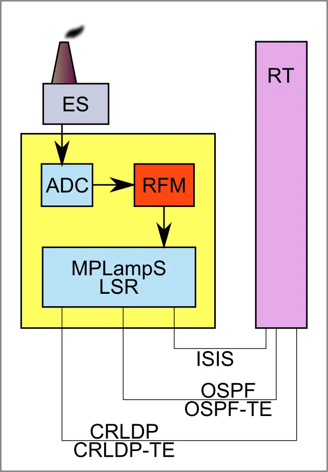

Contents
- Introduction
- Experimental Technology Test Facility
- Disclaimer
- Hardware Architecture
- Power Over IP Interface
- Testing Instructions
- Safety
- References
1. Introduction
These days, the concept of delivering different services through IP gradually take more and more of market share from the earlier technologies. Traditional telephony is being slowly replaced by Voice Over IP (VoIP [1]), radio and television both give a way to media streaming over TCP/IP [2], and traditional monetary operations — to online transactions. Power delivery, due to serious technological and economical barriers, however, remained terra incognita for a long time. At the same time, smart mobile devices and their energy supply present the real bottleneck. Their users became as mobile as they can possibly be, but this mobility is limited by their access to the energy sources and the lifetime of the battery charge. While the periods of time when they lack wireless Internet access become shorter and less likely, the battery lifetime growth, being considerably fast, has stalled and became a more critical limiting factor than the Internet access.
At the same time, there is nothing impossible in delivering energy on request. Such technology as Power over Ethernet has been standardized as early as 2003 [3]. Wireless charging is a well-established technology, too [4]. This technology is used even for recharging of the electric vehicles [5]; see also [6]. First experimental works on Power over IP have been started during late 199x, and first standard proposal was published by IETF as RFC 3251 under the name "Electricity over IP" [7]. The proposal refers to the pioneering work on "Discrete Voltage Encoding" of 1999 [8]. At that time, first experiments have demonstrated serious technological obstacles, but also some promising prospects of the technology which we welcomed with a lot of enthusiasm.
Over decade of research, development and fundamental innovation has clearly proven the prospects of technology presently known under the name of Power over IP (PoIP), so now we can talk about future commercialization of it. At this moment, public testing has been started. Every Internet user has a chance to participate in testing, free of charge, for limited period of time. The present article provides full source code of the client software, including comprehensive usage instructions. Alternatively, access through a single Internet gateway is also provided, but it may present heavier traffic limitations and may not be accessible 24 hours.
Basically, under normal conditions, the power supply should be sufficient to power up a typical laptop or netbook of moderate energy consumption (the default power plan "Power Saver" of Microsoft Windows OS on a laptop is usually not a problem), and fully re-charge its battery.
2. Experimental Technology Test Facility
The first experimental facility is a result of a joint effort of Russian Academy of Sciences, M.I.P.T., Thermo Fisher Scientific, and Multitasking Object-Oriented Distributed Laboratory (MOOD Lab), with financial support of the Council for Alternative Sources of Energy and Alternatively Talented Researches, office of the Administration of the President of USA.
The facility is based on a small power plant, independent from all the power networks. The power generator relies on the supply of limited amount of coal delivered from the abandoned coal mining area of the Donets Basin, Ukraine. The supply of the remaining coal is quite sufficient for the purpose of the testing facility. The power transmission server (so-called "power donor site"), fully powered by this independent power plant, is located at the following address: 6 Maidan Nezalezhnosti, suite 13, Kiev, Kyiv city, Ukraine.
The public testing will be performed on FIFO basis and should be performed with certain care and understanding that, due to competitive access to the facility, we cannot guarantee the service at any moment of time to all testers.
3. Disclaimer
Electric energy is delivered "AS IS" and without warranties of any kind, either express or implied, including warranties of merchantability, non-infringement of intellectual property, or fitness for any particular purpose. In no event shall we be liable for any direct, indirect, incidental, special, exemplary, or consequential damages, including, but not limited to, loss of profit, data or hardware components due to discontinued power supply or any particular changes in power supply.
4. Hardware Architecture
Main principles of the operation are based on the Discrete Voltage Encoding (DVE) scheme and are described in detail in [7].
The block diagram of the hardware we developed is shown on top of the article. The heart of our innovation is the RTP processor implementing the Real-Time Transport Protocol (RTP, in the terminology of the RFC 3251 [7]). It is based on the Radio-Frequency Modulator show on the block diagram as RFM. The values for the frequencies can be specified by the client part code (please see the interface specification in next section), but this is done solely for research purposes. Normally, they are not specified and their choice and optimization is left to the service part. You can send a request and see the values obtained from the response. Principles of the RFM technology are explained in detail on the RF site. Those principles and the problem of the modulation optimization are extremely complicated but presently well-grounded.
All other elements on the diagram are named according to [7].
5. Power Over IP Interface
The client interface to the power supply (power donor site) if based on WCF service contract. The service uses TCP transport. There are two different types of contract: one is primarily based on pull technology, and another one is solely based on push technology. In the case of pull interface, the power is requested by time slices. The thread of the client software can request for power of certain level for some slice of time, get a response informing it of the actually provided slice, and then it can sleep for the period of time before expiration of the slice. However, expiration may be not the only reason of stopping the power delivery (due to different exceptional situation). To take it into account, the client side can optionally receive notifications on possible stopping of the delivery and other events. For this purpose, duplex services [9] are implemented.
In contrast to that, push interface is oriented for permanent energy consumption by the client, which starts with the request for energy delivery and stopped by disconnection from the service. This service is also duplex, and the client is notified through the client-implemented callback contract on all the power-related events.
The request is based on the hierarchy of two classes, first describing the required power level and radio modulation frequency; and the derived class adding the time slice data to it:
using System;
public class PowerConsumptionSpecification {
public PowerConsumptionSpecification(float averageLevel, float rf) {
this.AverageLevel = averageLevel;
this.DoubleAverageLevel = double.NaN;
this.RadioFrequency = rf;
this.DoubleAverageLevel = double.PositiveInfinity;
} public PowerConsumptionSpecification(double averageLevel, double rf) {
this.DoubleAverageLevel = averageLevel;
this.AverageLevel = float.NegativeInfinity;
this.DoubleRadioFrequency = rf;
this.AverageLevel = float.NaN;
} public PowerConsumptionSpecification(float averageLevel) {
this.AverageLevel = averageLevel;
this.DoubleAverageLevel = double.NaN;
this.RadioFrequency = float.NegativeInfinity;
this.DoubleAverageLevel = double.PositiveInfinity;
} public PowerConsumptionSpecification(double averageLevel) {
this.DoubleAverageLevel = averageLevel;
this.AverageLevel = float.NegativeInfinity;
this.DoubleRadioFrequency = double.NaN;
this.AverageLevel = float.NaN;
} public float AverageLevel { get; private set; }
public double DoubleAverageLevel { get; private set; }
public float RadioFrequency { get; private set; }
public double DoubleRadioFrequency { get; private set; }
}
public class PowerSlice : PowerConsumptionSpecification {
public PowerSlice(float averageLevel, TimeSpan duration, float rf) : base(averageLevel, rf) { this.Duration = duration; }
public PowerSlice(double averageLevel, TimeSpan duration, double rf) : base(averageLevel, rf) { this.Duration = duration; }
public PowerSlice(float averageLevel, TimeSpan duration) : base(averageLevel) { this.Duration = duration; }
public PowerSlice(double averageLevel, TimeSpan duration) : base(averageLevel) { this.Duration = duration; }
public TimeSpan Duration { get; private set; }
}
Note that the level and frequency are specified in a dual way: single and double precision. They have different default values and cause connection to different supply sockets. Generally, if you request double, the delivery is more responsive, allows for greater consumption levels, but less reliable, which should be taken into account for mission-critical applications.
Two types of the interfaces, based on pull and push technology, are based on the common interface IPowerRecipient:
using System;
using System.ServiceModel;
public enum PowerStatus {
Listening, Powered, TerminationWarned, Expired,
PowerPlantMulfunction, PowerPlantDestruction, GovernmentShutdown,
Disconnected, }
public interface IPowerRecipient {
DateTime? MostRecentRequest { get; }
TimeSpan? MostRecentRequestDuration { get; }
}
[ServiceContract(
Name = "Power Pull",
Namespace = "http://microsoft.WTF.PoIP",
CallbackContract = typeof(IPowerDonor),
SessionMode = SessionMode.NotAllowed)]
public interface IPowerPullRecepient : IPowerRecipient {
PowerSlice Request(PowerSlice request); }
[ServiceContract(
Name = "Power Push",
Namespace = "http://microsoft.WTF.PoIP",
CallbackContract = typeof(IPowerDonor),
SessionMode = SessionMode.Required)]
public interface IPowerPushRecepient : IPowerRecipient {
PowerConsumptionSpecification Request(PowerConsumptionSpecification request); }
Note the CallbackContract parameter of the ServiceContract. These parameters allow the client to define the callback contract needed for utilization of the duplex services. This callback contract, if implemented, allows the client to respond to the events passed through the interface IPowerDonor. These events notifies of the stopping of the power delivery, inform the client of the reasons and provide the access to the instance of the recipient object which requested the power delivery; in turn, it provides access to the detail of most recent request, if any.
Let's see how the duplex mechanism is used to handle the events send by the service to warn the client on the stopping of the energy supply and the actual stopping. In this simplified example, the functionality is implemented in the abstract class PowerDonorHandler. The derived class, PullPowerDonorHandler, is used to demonstrate how to send a request to more power on the warning notification in case of the use of the pull technology:
internal abstract class PowerDonorHandler : IPowerDonor {
internal PowerDonorHandler() { }
void IPowerDonor.PowerSupplyTerminationWarning(PowerStatus reason, IPowerRecipient recepient) {
if (reason == PowerStatus.Expired) {
RequestMorePower();
System.Windows.MessageBox.Show("No way! I want more power!");
} System.Windows.MessageBox.Show("Save your work or find another energy source");
} void IPowerDonor.PowerSupplyEnded(PowerStatus reason, IPowerRecipient recepient) {
System.Windows.MessageBox.Show("Too late...");
} protected abstract void RequestMorePower();
}
internal class PullPowerDonorHandler : PowerDonorHandler, IPowerDonor {
internal PullPowerDonorHandler(IPowerPullRecepient puller) { this.puller = puller; }
protected override void RequestMorePower() {
puller.Request(new PowerSlice(3.14d, new TimeSpan(3, 610, 0))); } IPowerPullRecepient puller;
}
Now, let's put it all together and see how the application can start the power recipient client, connect it to some power donor site, request and then consume delivered power:
IPowerPullRecepient recepient = PullPowerFactory.GetProxy();
PullPowerDonorHandler donorHandler = new PullPowerDonorHandler(recepient);
PowerSlice deliveredPower = recepient.Request(new PowerSlice(2.71d, new TimeSpan(2, 0, 0), 300.13));
if (deliveredPower.Duration <= new TimeSpan(0))
System.Windows.MessageBox.Show("What kind of service is that?");
Simple enough, isn't it?
For really working, fully implemented power recipient client code, please download the source code referenced on the top of this page.
In addition to the bare WCF service using TCP channels, we provide the HTTP interface wrapping this service on the server part. The access to the power donor site is also provided by our PoIP client you can download from this page.
6. Testing Instructions
Testing procedure, in its basic capacity, is extremely simple. We recommend using only the client you can download from this page, or, as a less desirable alternative, the Internet PoIP gateway. We do not recommend modifying the part of the source code responsible for creation and sending of the power requests to the server, which uses default values for the power level and modulation frequency (called "power consumption specification"; please see the interface code above). However, you can do it if you agree to take the minimal risk of damaging your hardware; in most cases, it will result in denial-of-service responses, if not successful power delivery.
The procedure of testing through the WCF client and Internet gateway is nearly identical. First, you click the "Connect" button (without setting any address information, because we have only one testing facility at this time), which will bring you to the next page. In our client, it uses the pull interface. You simply choose the desired duration from a drop-down list and click the "Request" button. The page will show the response information with actual time slice and actual power consumption specification. Also, the current status message will remind you to unplug the computer from power grid, if you did not do it before.
This is the important moment. To start consuming energy, you need to make sure that your computer is not plugged into the power grid. You need to remove the power plug, but not the battery. Without this step, you cannot consume energy through PoIP. If the computer does not have a battery (for example, in the case of desktop PC), you should remove the power cable anyway. Of course, in this case, you will need to assume some minor risk of losing power, due to possibility of different exceptional situation, such as the loss of Internet connection, by one or another reason.
However, if the Internet connection is not disrupted, the risk of losing the power delivered through PoIP is very low. The client is programmed to repeat the power request automatically on the power warning received through the callback interface. This mechanism is demonstrated in the above in the simplified sample implementation of the callback service contract interface IPowerDonor by the class PullPowerDonorHandler.
Permanent disconnection from the PoIP power consumption is performed on the disconnection from the TCP channel of the service contract interface. It happens when you close the application window. In the case of HTTP gateway interface, you will need to close the browser window. Also, disconnection from the PoIP power can be performed on the server side due to any of the exceptional situations, such as the case of total energy consumption exceeding the capacity of a power plant. In this case, priority is given to the clients who have consumed less power during the current TCP session.
7. Safety
The analytic study of the services revealed several distinct exploit possibilities specific to power delivery. Below, I'll describe most expected types of possible exploits.
Power Injection. The malicious software can potentially spoof real client requests and inject unrealistic or dangerous values for power and radio frequencies specified in the power requests. In worst case, such an attack can disrupt communications and prevent power consumption at the point of attack, which is relatively harmless, due to local nature of such attacks. A much more serious variant of exploit would be spoofing of the server-side address to substitute the address of the fake power donor site. Such malicious donor sites can generate and deliver energy themselves, possibly supplying a lot more power than it is claimed through the application protocol. Delivery of excess energy can cause overheating of the power sockets of the recipient devices and harm the client hardware. This exploit is mitigated by sanitation of the request/response data passed through the interface.
Denial of Power Service Attack ("DOPS-attack"). Correct behavior of the client software assumes that the currently delivered slice of power supply is consumed almost completely, at least until the warning is received (please see the implementation of sample PowerDonorHandler). As time slices are always considerably long, it cannot overwhelm the traffic. The malicious clients can generate power requests not waiting for the expiration. Not only it can cause the same problem as Denial-of-service attack (DDOS), but the lack of dissipation of energy in the client device can damage the routers and other network equipment. The mitigation of such exploits is quite possible but is a matter of ongoing research.
Other methods of the attack are also a subject of intensive research and cannot be disclosed at this moment.
We encourage anyone to record all cases when some sign of malicious activity is detected and report them through the problem reporting facility provided by the client code referenced in this article.
References
[1] http://en.wikipedia.org/wiki/VoIP
[2] http://en.wikipedia.org/wiki/Media_streaming
[3] http://en.wikipedia.org/wiki/Power_over_ethernet
[4] http://en.wikipedia.org/wiki/Inductive_charging
[5] http://en.wikipedia.org/wiki/Inductive_charging#Electric_vehicles
[6] http://en.wikipedia.org/wiki/Plugless_Power
[7] Electricity Over IP, http://www.ietf.org/rfc/rfc3251.txt
[8] International Tarriffed Utilities association draft standard, ITU, G.110/230V, "Discrete Voltage Encoding", March, 1999
[9] Duplex Services, http://msdn.microsoft.com/en-us/library/ms731064%28v=vs.110%29.aspx